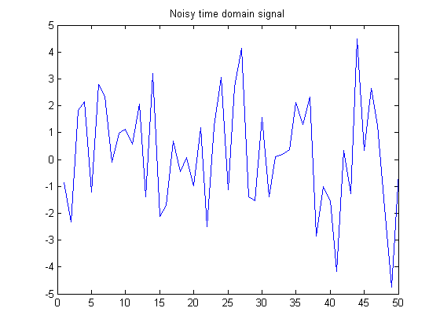
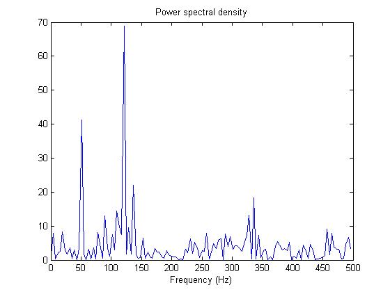
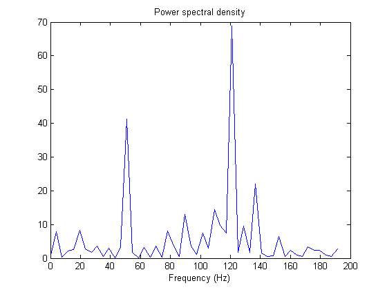

This example shows the use of the FFT function for spectral analysis. A common use of FFT's is to find the frequency components of a signal buried in a noisy time domain signal.
First create some data. Consider data sampled at 1000 Hz. Start by forming a time axis for our data, running from t=0 until t=.25 in steps of 1 millisecond. Then form a signal, x, containing sine waves at 50 Hz and 120 Hz.
t = 0:.001:.25; x = sin(2*pi*50*t) + sin(2*pi*120*t);
Add some random noise with a standard deviation of 2 to produce a noisy signal y. Take a look at this noisy signal y by plotting it.
y = x + 2*randn(size(t));
plot(y(1:50))
title('Noisy time domain signal')
 Clearly, it is difficult to identify the frequency components from looking at this signal; that's why spectral analysis is so popular.
Finding the discrete Fourier transform of the noisy signal y is easy; just take the fast-Fourier transform (FFT).
Y = fft(y,256);
Compute the power spectral density, a measurement of the energy at various frequencies, using the complex conjugate (CONJ). Form a frequency axis for the first 127 points and use it to plot the result. (The remainder of the 256 points are symmetric.)
Pyy = Y.*conj(Y)/256; f = 1000/256*(0:127); plot(f,Pyy(1:128)) title('Power spectral density') xlabel('Frequency (Hz)')
Zoom in and plot only up to 200 Hz. Notice the peaks at 50 Hz and 120 Hz. These are the frequencies of the original signal.
plot(f(1:50),Pyy(1:50)) title('Power spectral density') xlabel('Frequency (Hz)')